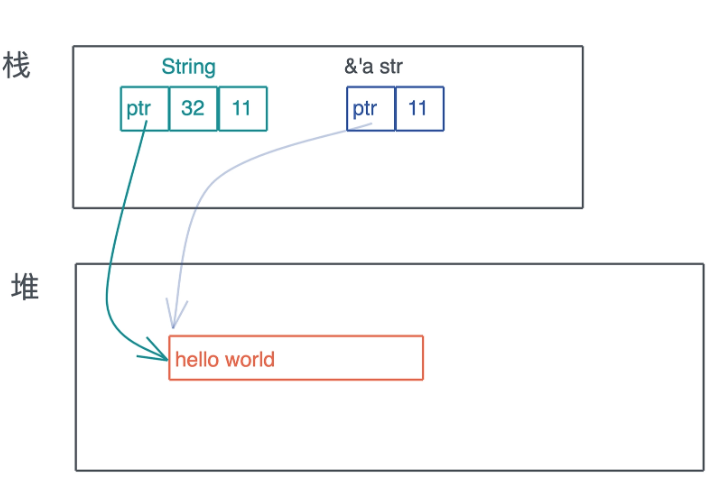

智能指针
在 Rust 中, 凡是需要做资源回收的数据结构, 且实现了 Deref/DerefMut/Drop, 都是智能指针.
#![allow(unused)] fn main() { pub trait Deref { type Target: ?Sized; fn deref(&self) -> &Self::Target; } pub trait DerefMut: Deref { fn deref_mut(&mut self) -> &mut Self::Target; } pub trait Drop { fn drop(&mut self); } }
1. String 和 &str
智能指针一定是一个胖指针, 但胖指针不一定是一个智能指针, 比如 &str 就只是一个胖指针, 它有指向堆内存字符串的指针, 同时还有关于字符串长度的元数据.
智能指针 String 和 &str 的区别:

但 String 对堆上的值有所有权, 而 &str 是没有所有权的, 这是 Rust 中智能指针和普通胖指针的区别.
String 是用结构体定义的.
#![allow(unused)] fn main() { pub struct String { vec: Vec<u8>, } }
和普通的结构体不同的是, String 实现了 Deref 和 DerefMut, 这使得它在解引用的时候, 会得到 &str
#![allow(unused)] fn main() { impl ops::Deref for String { type Target = str; fn deref(&self) -> &str { unsafe { str::from_utf8_unchecked(&self.vec) } } } impl ops::DerefMut for String { fn deref_mut(&mut self) -> &mut str { unsafe { str::from_utf8_unchecked_mut(&mut *self.vec) } } } }
由于在堆上分配了数据, String 还需要为其分配的资源做相应的回收. 而 String 内部使用了 Vec, 所以它可以依赖 Vec 的能力来释放堆内存.
#![allow(unused)] fn main() { unsafe impl<#[may_dangle] T, A: Allocator> Drop for Vec<T, A> { fn drop(&mut self) { unsafe { // use drop for [T] // use a raw slice to refer to the elements of the vector as weakest necessary type; // could avoid questions of validity in certain cases ptr::drop_in_place(ptr::slice_from_raw_parts_mut(self.as_mut_ptr(), self.len)) } // RawVec handles deallocation } } }
2. Box<T>
Box<T> 的定义里, 内部就是一个 Unique<T> 用于致敬 C++, Unique<T> 是一个私有的数据结构, 我们不能直接使用, 它包裹了一个 *const T 指针, 并唯一拥有这个指针.
#![allow(unused)] fn main() { pub struct Unique<T: ?Sized> { pointer: *const T, // NOTE: this marker has no consequences for variance, but is necessary // for dropck to understand that we logically own a `T`. // // For details, see: // https://github.com/rust-lang/rfcs/blob/master/text/0769-sound-generic-drop.md#phantom-data _marker: PhantomData<T>, } pub struct Box<T: ?Sized,A: Allocator = Global>(Unique<T>, A) }
3. Cow<'a, B>
Cow 是 Rust 下用于提供写时克隆 (Clone-on-Write) 的一个智能指针, 它跟虚拟内存管理的写时复制 (Copy-on-write) 有异曲同工之妙: **包裹一个只读借用, 但如果调用者需要所有权或者需要修改内容, 那么它会 clone 借用的数据. **
#![allow(unused)] fn main() { pub enum Cow<'a, B> where B: 'a + ToOwned + ?Sized { Borrowed(&'a B), // 对类型 B 的只读引用 Owned(<B as ToOwned>::Owned), // 包含对类型 B 的拥有所有权的数据 } }
这里引入了两个 trait, 首先是ToOwned, 在ToOwner trait 定义的时候, 又引入了 Borrow trait, 它们都是 std::borrow 下的 trait.
#![allow(unused)] fn main() { pub trait ToOwned { type Owned: Borrow<Self>; #[must_use = "cloning is often expensive and is not expected to have side effects"] fn to_owned(&self) -> Self::Owned; fn clone_into(&self, target: &mut Self::Owned) { ... } } pub trait Borrow<Borrowed> where Borrowed: ?Sized { fn borrow(&self) -> &Borrowed; } }
首先 Owned: Borrow<Self> 是一个带有关联类型的 trait, 这里的 Owned 关联类型, 需要使用者定义, 并且这里的Owned 不能是任意类型, 它必须满足 Borrow<T> trait. 例如 str对 ToOwner trait 的实现:
#![allow(unused)] fn main() { impl ToOwned for str { type Owned = String; #[inline] fn to_owned(&self) -> String { unsafe { String::from_utf8_unchecked(self.as_bytes().to_owned()) } } fn clone_into(&self, target: &mut String) { let mut b = mem::take(target).into_bytes(); self.as_bytes().clone_into(&mut b); *target = unsafe { String::from_utf8_unchecked(b) } } } }
可以看到关联类型 Owned 被定义为 String, 而根据要求, String 必须定义 Borrow, 那这里 Borrow 里的泛型变量 T 是谁呢？
ToOwned 要求是 Borrow, 而此刻实现 ToOwned 的主体是 str, 所以 Borrow 是 Borrow<str>, 也就是说 String 要实现 Borrow<str>, 我们看文档, 它的确实现了这个 trait:
#![allow(unused)] fn main() { impl Borrow<str> for String { #[inline] fn borrow(&self) -> &str { &self[..] } } }
Cow说它是智能指针, 那它自然需要实现 Deref trait:
#![allow(unused)] fn main() { impl<B: ?Sized + ToOwned> Deref for Cow<'_, B> { type Target = B; fn deref(&self) -> &B { match *self { Borrowed(borrowed) => borrowed, Owned(ref owned) => owned.borrow(), } } } }
这种根据 enum 的不同状态来进行统一分发的方法是第三种分发手段, 可以使用泛型参数做静态分发和使用 trait object 做动态分发.
4. MutexGuard<T>
MutexGuard<T> 是一类很有意思的智能指针: 它不但通过 Deref 提供良好的用户体验, 还通过 Drop trait 来确保, 使用到的内存以外的资源在退出时进行释放.
MutexGuard这个结构是在调用 Mutex::lock 时生成的:
#![allow(unused)] fn main() { pub fn lock(&self) -> LockResult<MutexGuard<'_, T>> { unsafe { self.inner.raw_lock(); MutexGuard::new(self) } } }
MutexGuard 的定义以及它的 Deref 和 Drop 的实现,
#![allow(unused)] fn main() { // 这里用 must_use, 当你得到了却不使用 MutexGuard 时会报警 #[must_use = "if unused the Mutex will immediately unlock"] pub struct MutexGuard<'a, T: ?Sized + 'a> { lock: &'a Mutex<T>, poison: poison::Guard, } impl<T: ?Sized> Deref for MutexGuard<'_, T> { type Target = T; fn deref(&self) -> &T { unsafe { &*self.lock.data.get() } } } impl<T: ?Sized> DerefMut for MutexGuard<'_, T> { fn deref_mut(&mut self) -> &mut T { unsafe { &mut *self.lock.data.get() } } } impl<T: ?Sized> Drop for MutexGuard<'_, T> { #[inline] fn drop(&mut self) { unsafe { self.lock.poison.done(&self.poison); self.lock.inner.raw_unlock(); } } } }
MuxteGuard 不允许Send, 只允许Sync. 就是说, 你可以把 MutexGuard 的引用传给另一个线程使用, 但你无法把 MutexGuard 整个 move 到另一个线程.